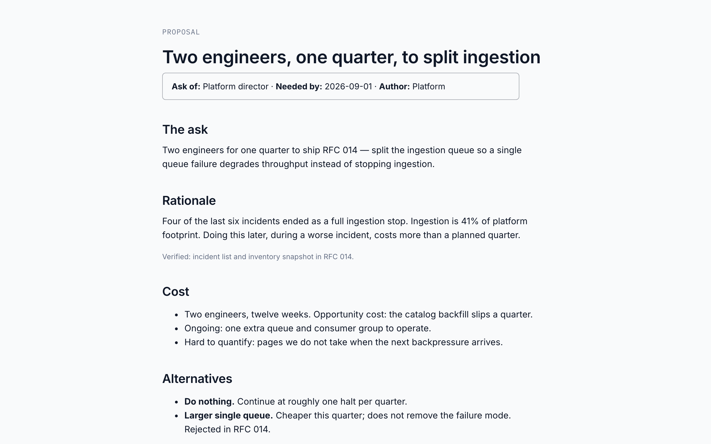

brand-theme-design
brand-theme-design turns a guide into a theme that satisfies
the token contract — and says so when the brand cannot do what was asked.
horizon is that process, finished. The proposal wearing it is
proposal-horizon.html.
A fictional brand guide. Hex as text, not sampled from a PNG.
| Guide role | Value |
|---|---|
| Primary | #0B5FFF |
| Ink | #101828 |
| Slate | #475467 |
| Cloud | #F2F4F7 |
| Success / warning / error | #12B76A / #F79009 / #F04438 |
| Display + body | Söhne (licensed — not redistributed) |
Subtraction first. The primary is accent only because the rest of the palette is neutral. A color used on every surface cannot also mean “look here.”
| Token | Value | Why |
|---|---|---|
--ink | #101828 | Brand ink is already body text. 16:1 on white. |
--muted | #475467 | Brand slate. 7.5:1. |
--paper | #F9FAFB | Cloud, lifted so surface can sit above it. |
--surface-muted | #F2F4F7 | Cloud proper, as the recess. |
--accent | #0B5FFF | Primary. Qualifies because the brand is otherwise neutral. |
--accent-ink | #FFFFFF | 4.9:1 on that blue. Would fail on a lighter blue. |
| Status | darkened brand values | Logo green/orange/red fail as text on --surface. Remedy 2: hold hue, shift lightness. |
| Type | Inter, not Söhne | Söhne is licensed. Inter is close in metrics. |
Do not eyeball contrast. The auditor is the part that matters.
python3 scripts/audit_theme.py core/themes/horizon.css
The call we actually made: brand success #12B76A, warning
#F79009, and error #F04438 were darkened until
they cleared on white. The accent itself passed. Source:
core/themes/horizon.css.
The same proposal as executive-navy (the
system's board voice) and editorial-coral.
Only data-theme changed. This is the one you send.
